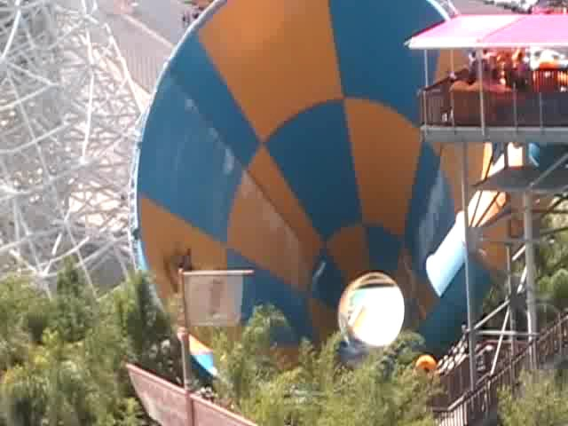
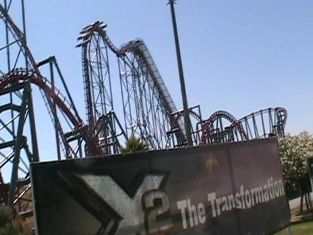

SFHH/SFMM 08
Today was the one day of the year where I went to Hurricane Harbor. It was a very fun day. Let me just tell you now, I don't photograph alot at SFHH, so this will be a short update. Oh, and let me tell you this advice now. If you want to go fast on Lost Temple Rapids, just ask a couple of fat chicks to ride with you and you'll go flying.
Since Venom Drop was closed today, we had to get our speed slide rush on Taboo Tower. Secret Passage at one point felt like Maverick, Daredevils Plunge was fun, Escape Chute was fun as well.

Tornado is fun. Too bad it doesn't have the BONUS HELIX!!!!!
 Hey, I got second on Bamboo Racer, but second's good too.
Hey, I got second on Bamboo Racer, but second's good too.
 Here's a tip of advice for Twisted Fang. Don't sit up on the ride. It may help stop the ride from scratching up your back, but I hit my head from it.
Here's a tip of advice for Twisted Fang. Don't sit up on the ride. It may help stop the ride from scratching up your back, but I hit my head from it.

Since we were finished with SFHH and had an hour left, we decided to go into SFMM and ride X2. Here's another tip. X2's line moves by FAST!!! The line may look 3 hours, but really, it's only 45 min. X2 was good as always. Then we left. I hope to go to Wild Rivers soon and experience the true helix of death.
Home